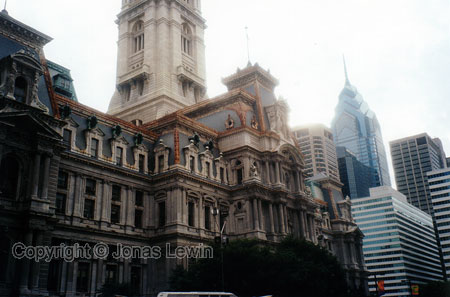
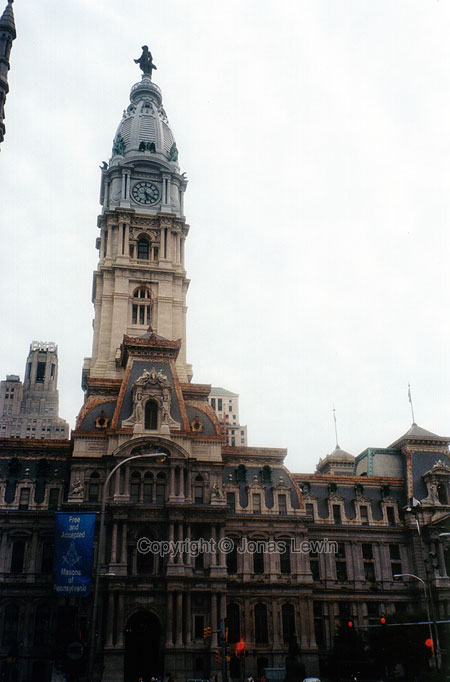
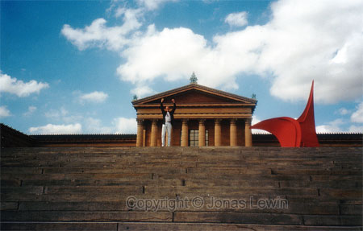
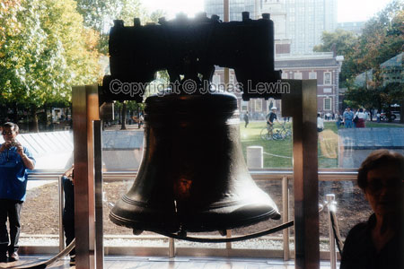
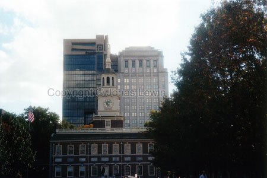
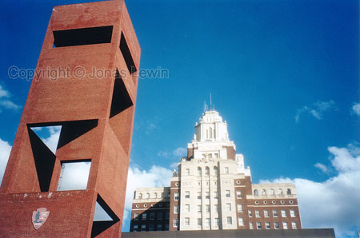
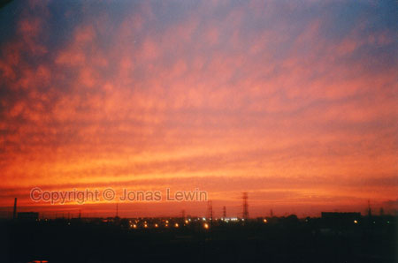

|
USA,
Philadelphia, 1999-08 USA: The place to get lost at.
The people living in the US are terrible at converting: Like how many feet
is a mile, etc... Either their system is really bad, or their education.
They always want to force people to think their way, and have trouble seeing
things different. I know that Sweden is not the perfect country. I mean, if
it where, then everybody would live there. But the Americans seem to think
that America is perfect.
The driving in the US is, for me, terrible. The traffic is to stressed, and
their road signs seem to follow no pattern, just to confuse the driver. When
I was driving from the hotel to the office, I never went the same way twice
for the whole week. I always ended up getting lost somewhere on the way,
except the last day from the office to the hotel. Anyway, enough about
traffic.
When I where there, hurricane Floyd was visiting Philly. Now that was quite
heavy raining. And the wind gushes where really strong. Not a very good day
to walk you dog. Still it was quite exciting. I had never encountered a
hurricane before. Only seen it on TV. To me it seems a lot worse on TV,
since there is always some people dying in hurricanes.
A few days after the hurricane, I had a day off. I went to get something to
eat. Of course I ended up in a mall. It's amazing how big they are. You can
easily spend a day there, without realising that the day just passed like
that. I spent more than 2 hours just browsing through a record store, and I
did not buy anything in the mall. If you haven't tried to visit a big mall,
I would clearly recommend it. Just for you to see how Americans can spend so
long time shopping.
I found a fun thing at the Coca Cola cans. It had printed on it: nutrition
facts. Nutrition in a Coke? You're kidding. Where can you find any trace of
nutrition in a Coke?
One thing that I found in Philly, that I did not find in Asia food wise, is
fried union rings. I was tired of the French fries in Burger King, so I tied
their fried union rings, and to my surprise they where very good. So good
that I asked around where I could get fried union rings, except for Burger
King.
Another tasty experience are Philly's cheese steaks. Try them, and you'll
see. So my favorite would be a cheese steak with fried union rings. Very
healthy :-)))
When I was driving in Philly, I found something I didn't expect to find. The
clear segregation of black and white people. One minute there where only
white folks on the street, and the next it was all black people there. I've
heard so much good things about the US, that segregation doesn't exist any
more. That's a complete lie.
When you are in Philadelphia
there are things that you just have to see, and
places to visit.
The steps to the Museum of Art have become quite famous from a motion
picture, starring Sylvester Stallone.
Just next to this museum, you can find the boat house row. You get a really
nice view from the museum.
Liberty bell is the most famous one right now. Take a wild guess if this
hung in Liberty hall and where an essential part of the declaration of
independence (at least according to the guide). Liberty hall is seen in the
background.

Downtown Philly, is South Street. The tourist Trap. Lots of commotion, and
very nice atmosphere at the restaurants. If you're there, this is the place
to get a Philly Cheese Steak.
Society hill is quite close. Lots of old English-style houses. Very nice,
and a quiet part of Philly. You cant believe that only a few streets away,
the traffic is constant chaos.
I was fortunate enough to watch a hockey game in Philly. It was a blast.
Thanks to my colleague, we go the best seats in the house; Dead center, and
5th row. It gave you the distance from the rink to be able to see all of it,
and the closeness to talk to the players (that where fortunate enough to end
up in the penalty box).
As in all American hockey games, there was a lot of fighting, and a few
goals. From what I heard, there where over 300 penalty-minutes given to the
players during this game. Fortunately Philadelphia won, against the odds. So
if you have the opportunity, and are interested in hockey, then I'd tell you
to go see one. It's the differences between the "normal" hockey you, and the
American hockey that fascinates me.
Close to Philadelphia, you have some Amish people. Their belief is to use
the old fashion tools, like horse and carriage. Also their style of clothes
are old fashioned. They all have the same haircuts, and very out of style.
To me it seems that they want to live the way that people have done for
three hundred years. Kind of like the old fashioned way you see in the old
western movies. I wouldn't be too surprised if some of the movie people have
used the Amish people as research for how things used to be. These are the
last people that I would ever expect ever go get a homepage.
US is the land of freedom. At least that's what every American keeps telling
us. To me, their perception of freedom is strange. Police officers are not
allowed to test the level of alcohol in your blood. All they can do is ask
you if you have been drinking. Is there anyone that answers yes on that
question??
Anyway, I would agree that they have the freedom, and the police does not
invade your life then. But then the citizens can't cross the street on a red
light, without risking a fine. Where did the freedom go?
When we where driving, we normally listen to the radio. After a while we
tuned to a rap station. Every few words where missing due to censuring. Is
that freedom?
They do have some real freedom, though. If you see a stop sign, that doesn't
mean to stop fully, only slow down. And if you want to turn right, when
there is a red light - go ahead. It's most often perfectly legal.
In the US there's a thing called Obsessive Behavior. And you can get a
fine, or worse, for that. Now, this seems to me that the police wants to
make everyone fit in to a box, and nobody is allowed to be outside those
bounds. So who decides what's out of the ordinary? Women are not allowed to
be topless at the beach. I always thought that you where born naked, and we
all look basically the same underneath our clothes. But in the US you can be
slapped with a fine for doing that.
|